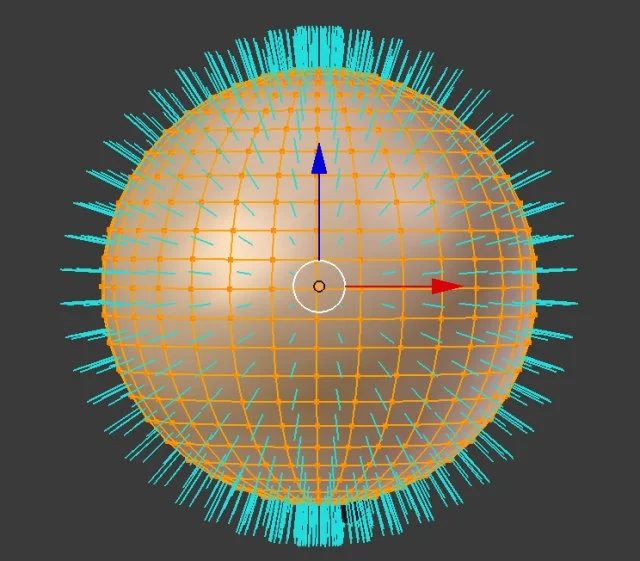
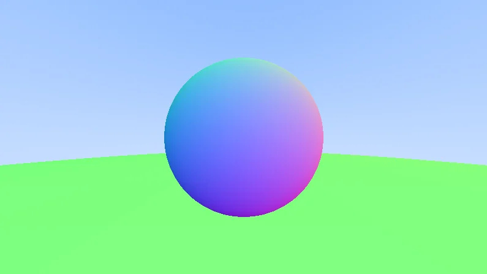

R-4 : Surface Normal Shading
Using normals to add shading, simplifying the quadratic formula, and building the Hittable abstraction so we can support multiple objects with an Interval system.
Surface Normal Shading
Normals
The normal vector tells us the direction a surface is facing. We make it unit length by dividing by the sphere radius.
For a sphere, the direction of the outward normal is the hit point minus the center.
Normal Map : We take the normal vector n normalized ([-1 ; 1]) and translate it to an RGB value ([0;255]).
In code it looks like this, HitSphere now returns the hit time instead of a bool :
Raytracing.cpp
double HitSphere(const Position& rCenter, double radius, const Ray& rRay)
{
Vector3 oC = rRay.GetOrigin() - rCenter;
double a = Dot(rRay.GetDirection(), rRay.GetDirection());
double b = 2.0 * Dot(oC, rRay.GetDirection());
double c = Dot(oC, oC) - radius * radius;
double discriminant = b * b - 4 * a * c;
if (discriminant < 0) return -1.0;
return (-b - sqrt(discriminant)) / (2.0 * a);
}
Color RayColor(const Ray& rRay)
{
double hitTime = HitSphere(Position(0, 0, -1), 0.5, rRay);
if(hitTime > 0.0)
{
Vector3 normal = Unit(rRay.At(hitTime) - Vector3(0, 0, -1));
return 0.5 * Color(normal.x + 1.0, normal.y + 1.0, normal.z + 1.0);
}
Vector3 unitDirection = Unit(rRay.GetDirection());
double blue = 0.5 * (unitDirection.y + 1.0);
return (1.0 - blue) * Color(1.0, 1.0, 1.0) + blue * Color(0, 0, 1.0);
}Simplifying the Ray-Sphere Intersection
We can simplify the discriminant calculation by substituting b = 2h :
We also use the identity that a vector dotted with itself equals its squared length :
Raytracing.cpp
double HitSphere(const Position& rCenter, double radius, const Ray& rRay)
{
Vector3 oC = rRay.GetOrigin() - rCenter;
double a = rRay.GetDirection().SquaredLength();
double halfB = Dot(oC, rRay.GetDirection());
double c = oC.SquaredLength() - radius * radius;
double discriminant = halfB*halfB - a * c;
if (discriminant < 0) return -1.0;
return (-halfB - sqrt(discriminant)) / a;
}Abstraction, Hittable Objects
We want to hit more than one object, so we create an abstract Hittable class that any object can inherit from, along with a time-frame where the ray is valid (t between min and max).
Hittable.h
#pragma once
#include "Ray.h"
class HitInfo
{
public:
Position coordinates;
Vector3 normal;
double time;
};
class Hittable
{
public:
virtual ~Hittable() = default;
virtual bool Hit(const Ray& rRay, double rayTimeMin, double rayTimeMax, HitInfo& hitInfo) const = 0;
};The Sphere class (child of Hittable) :
Sphere.h
#pragma once
#include "Hittable.h"
class Sphere: public Hittable
{
private:
Position mCenter;
double mRadius;
public:
Sphere(Position center, double radius) : mCenter(center), mRadius(radius){}
bool Hit(const Ray& rRay, double rayTimeMin, double rayTimeMax, HitInfo& hitInfo) const override;
};Sphere.cpp
#include "Sphere.h"
bool Sphere::Hit(const Ray& rRay, double rayTimeMin, double rayTimeMax, HitInfo& hitInfo) const
{
Vector3 oC = rRay.GetOrigin() - mCenter;
double a = rRay.GetDirection().SquaredLength();
double halfB = Dot(oC, rRay.GetDirection());
double c = oC.SquaredLength() - mRadius*mRadius;
double discriminant = halfB * halfB - a * c;
if (discriminant < 0) return false;
double sqrtDiscriminant = sqrt(discriminant);
// Find the nearest root within the valid time frame
double root = (-halfB - sqrtDiscriminant) / a;
if (root <= rayTimeMin || rayTimeMax <= root) {
root = (-halfB + sqrtDiscriminant) / a;
if (root <= rayTimeMin || rayTimeMax <= root)
return false;
}
hitInfo.time = root;
hitInfo.coordinates = rRay.At(hitInfo.time);
Vector3 outwardNormal = (hitInfo.coordinates - mCenter) / mRadius;
hitInfo.SetFaceNormal(rRay, outwardNormal);
return true;
}Direction of Normals
We determine which side of a face we're hitting using the dot product between the incoming ray and the outward normal.
Add face info to HitInfo
Hittable.h
class HitInfo
{
public:
Position coordinates;
Vector3 normal;
double time;
bool frontFace;
void SetFaceNormal(const Ray& rRay, const Vector3& outwardNormal)
{
// NOTE: the outwardNormal vector should be unit length
frontFace = Dot(rRay.GetDirection(), outwardNormal) < 0;
normal = frontFace ? outwardNormal : -outwardNormal;
}
};Finish the Sphere hit function
Sphere.cpp
hitInfo.time = root;
hitInfo.coordinates = rRay.At(root);
Vector3 outwardNormal = (hitInfo.coordinates - mCenter) / mRadius;
hitInfo.SetFaceNormal(rRay, outwardNormal);
return true;HittableCollection, a List of Objects
HittableCollection.h
#pragma once
#include "Hittable.h"
#include <memory>
#include <vector>
class HittableCollection : public Hittable
{
private:
std::vector<std::shared_ptr<Hittable>> mPool;
public:
HittableCollection() = default;
HittableCollection(std::shared_ptr<Hittable> hittable) { Add(hittable); }
void Clear() { mPool.clear(); }
void Add(std::shared_ptr<Hittable> hittable) { mPool.push_back(hittable); }
bool Hit(const Ray& rRay, double rayTimeMin, double rayTimeMax, HitInfo& hitInfo) const override;
};HittableCollection.cpp
#include "HittableCollection.h"
using namespace std;
bool HittableCollection::Hit(const Ray& rRay, double rayTimeMin, double rayTimeMax, HitInfo& hitInfo) const
{
HitInfo tempInfo;
bool hasHit = false;
auto closestHit = rayTimeMax;
for (const shared_ptr<Hittable>& hittable : mPool) {
if (hittable->Hit(rRay, rayTimeMin, closestHit, tempInfo)) {
hasHit = true;
closestHit = tempInfo.time;
hitInfo = tempInfo;
}
}
return hasHit;
}Interval
A simple way to describe the valid time range for a ray bounce.
Utility.h
#pragma once
#include <cmath>
#include <limits>
#include <memory>
#include "Ray.h"
using std::shared_ptr;
using std::make_shared;
using std::sqrt;
const double infinity = std::numeric_limits<double>::infinity();
const double pi = 3.141592653589793238462643383279502884197169;
inline double DegToRad(double degrees)
{
return degrees * pi / 180.0;
}Interval.h
class Interval
{
public:
double min, max;
Interval() : min(+infinity), max(-infinity){} // Default interval is empty
Interval(double pMin, double pMax) : min(pMin), max(pMax){}
bool Contains(double x) const { return min <= x && x <= max; }
bool Surrounds(double x) const { return min < x && x < max; }
static const Interval Empty, Universe;
};
const static Interval Empty(+infinity, -infinity);
const static Interval Universe(-infinity, +infinity);Update the signatures in headers to use Interval :
Hittable.h / HittableCollection.h / Sphere.h
virtual bool Hit(const Ray& rRay, Interval rayTime, HitInfo& hitInfo) const = 0;And update the implementations to use rayTime.Surrounds(root) and Interval(0, infinity) in main. Test it to make sure it works, buh bye!
